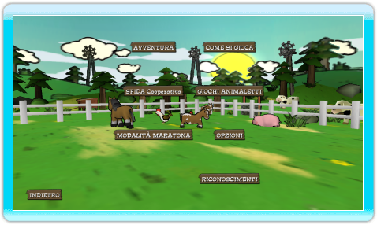

8 |
Menù Principale |
 |

Scegli il tipo di partita da giocare o accedi al menù Opzioni per cambiare le impostazioni del gioco. Per partite multiplayer, ogni giocatore deve avere il suo telecomando Wii.
Avventura – Viaggia per il mondo e metti alla prova la tua abilità nel costruire recinzioni. Gioca da solo o con un altro giocatore in tutti 50 i livelli.
Sfide Co-Op – Gioca in questi livelli multiplayer con fino a quattro giocatori. Usa i tuoi amici per attirare quell'orso irritato e levarlo di mezzo!
Modalità Maratona – In questa modalità da 1 a 4 giocatori, ti attende un numero quasi infinito di incontri con animali. Fino a dove puoi arrivare?
Giochi Animaleschi – Raduna i tuoi amici per giocare a questi minigiochi. Possono partecipare fino a 4 giocatori!
Come si Gioca – I giocatori novelli dovrebbero guardare questo tutorial che spiega come giocare a Critter Round-Up
Opzioni – Qui puoi cambiare le impostazioni audio e vedere i controlli.
Riconoscimenti – Vedi i nomi delle persone che hanno portato a te Critter Round-Up. |
 |
 |
 |